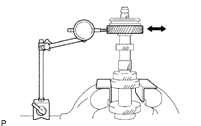
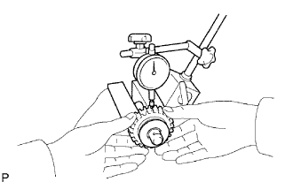
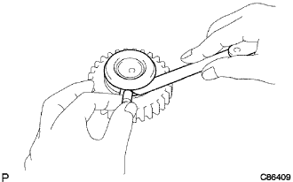
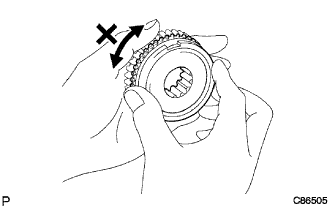
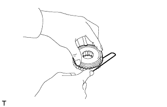
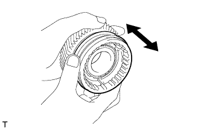
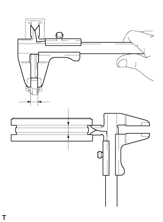
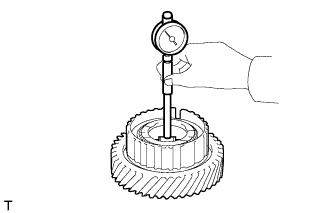

БЛОК МЕХАНИЧЕСКОЙ ТРАНСМИССИИ > ПРОВЕРКА |
| 1. INSPECT COUNTER SHAFT 5TH GEAR RADIAL CLEARANCE |
|  |
Install the 5th gear thrust washer lock ball, 5th gear thrust washer and 5th gear to the counter gear.
Using a dial indicator, measure the 5th gear radial clearance.
| 2. INSPECT REVERSE IDLER GEAR RADIAL CLEARANCE |
|  |
Using a dial indicator, measure the radial clearance.
| 3. INSPECT REVERSE IDLER GEAR SUB-ASSEMBLY |
|  |
Using a feeler gauge, measure the clearance between the reverse idler gear and reverse shift arm.
| 4. INSPECT NO. 1 SYNCHRONIZER RING |
|  |
Apply gear oil to the cone part of the No. 5 gear spline piece, and check that the No. 1 synchronizer ring does not turn in either direction while pushing it against the No. 5 gear spline piece. If the No. 1 synchronizer ring turns, replace it.
|  |
Push the No. 1 synchronizer ring outer against the cone part of the No. 5 gear spline piece. Measure the clearance between the No. 1 synchronizer ring outer and No. 5 gear spline piece.
| 5. INSPECT NO. 3 TRANSMISSION HUB SLEEVE |
|  |
Check the sliding condition between the counter shaft 5th gear and No. 3 transmission hub sleeve.
Check the spline of the No. 3 transmission hub sleeve for wear.
|  |
Using a vernier caliper, measure the No. 3 transmission hub sleeve groove and the thickness of the claw part of the No. 3 shift fork and calculate the clearance.
| 6. INSPECT COUNTER SHAFT 5TH GEAR |
|  |
Using a cylinder gauge, measure the inside diameter of the counter 5th gear.